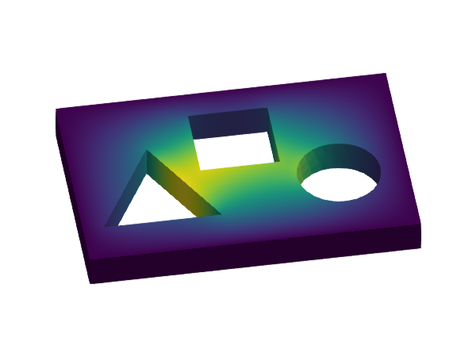

Poisson equation

Problem statement
We want to solve a simple Poisson equation, but this time on a more complex domain and also including Neumann boundary conditions. Dirichlet boundary conditions are applied on $\Gamma_{\rm D}$, non-homogeneous Neumann conditions are applied on $\Gamma_{\rm N}$, and homogeneous Neumann boundary conditions are applied on the remaining portion of the boundary. The computational domains are defined in the mesh file model.msh. The domain $\Omega$ is represented by the 3D faces in this mesh. The domain $\Gamma_{\rm D}$ is represented by the physical group named "sides" and $\Gamma_{\rm N}$ is the union of the physical groups named "circle", "triangle", and "square".
Formally, the problem to solve is: find the scalar field $u$ such that
\[\left\lbrace \begin{aligned} -\Delta u = f \ &\text{in} \ \Omega,\\ u = g \ &\text{on}\ \Gamma_{\rm D},\\ \nabla u\cdot n = h \ &\text{on}\ \Gamma_{\rm N},\\ \nabla u\cdot n = 0 \ &\text{elsewhere on}\ \partial \Omega,\\ \end{aligned} \right.\]
being $n$ the outwards unit normal vector to $\partial\Omega$. In this example, we chose $f(x) = 1$, $g(x) = 2$, and $h(x)=3$. The variable $x$ is the position vector $x=(x_1,x_2,x_3)$.
Numerical scheme
We use a conventional Galerkin finite element (FE) method with conforming Lagrangian FE spaces (see, e.g., [1]). The weak form equation we solve consists in finding $u_h\in V_g$ such that $a(u_h,v) = \ell(v)$ for all $v\in V_0$. To this end we build a space $V$ spanned by continuous and piece-wise Lagrangian basis functions. The auxiliary spaces $V_g$ and $V_0$ are the subsets of $V$ that fulfill the Dirichlet boundary condition $g$ and $0$ on $\partial\Omega$ respectively. The bilinear and linear forms are
\[ a(u,v) \doteq \int_{\Omega} \nabla v \cdot \nabla u \ {\rm d}\Omega, \quad b(v) \doteq \int_{\Omega} v\ f \ {\rm d}\Omega + \int_{\Gamma_{\rm N}} v\ h \ {\rm d}\Gamma_{\rm N}.\]
This equation results in a system of linear algebraic equations that is solved using an external linear solver from LinearSolve.jl.
Implementation
using LinearAlgebra
import GalerkinToolkit as GT
import LinearSolve
import ForwardDiff
import GLMakie as Makie
#Read the mesh file
assets_dir = normpath(joinpath(@__DIR__,"..","..","..","assets"))
msh_file = joinpath(assets_dir,"model.msh")
mesh = GT.mesh_from_msh(msh_file)
#Geometry
dirichlet_names = ["sides"]
neumann_names = ["circle", "triangle", "square"]
Ω = GT.interior(mesh)
Γd = GT.boundary(mesh;physical_names=dirichlet_names)
Γn = GT.boundary(mesh;physical_names=neumann_names)
#Define forcing data
f = GT.analytical_field(x->1.0,Ω)
g = GT.analytical_field(x->2.0,Ω)
h = GT.analytical_field(x->3.0,Ω)
#Define the interpolation space.
k = 1
V = GT.lagrange_space(Ω,k;dirichlet_boundary=Γd)
#Interpolate Dirichlet values.
T = Float64
uhd = GT.zero_dirichlet_field(T,V)
GT.interpolate_dirichlet!(g,uhd)
#Define numerical integration.
degree = 2*k
dΩ = GT.measure(Ω,degree)
dΓn = GT.measure(Γn,degree)
#Define weak form.
∇ = ForwardDiff.gradient
a = (u,v) -> GT.∫( x->∇(u,x)⋅∇(v,x), dΩ)
l = v -> GT.∫( x->v(x)*f(x), dΩ) + GT.∫( x->v(x)*h(x), dΓn)
#Assemble the problem and solve it
p = GT.SciMLBase_LinearProblem(uhd,a,l)
sol = LinearSolve.solve(p)
#Build the FE solution.
uh = GT.solution_field(uhd,sol)
#Visualize the solution.
fig = Makie.Figure()
elevation = 0.24π
azimuth = -0.55π
aspect = :data
ax = Makie.Axis3(fig[1,1];aspect,elevation,azimuth)
Makie.hidespines!(ax)
Makie.hidedecorations!(ax)
GT.makie_surface!(Ω;color=uh)Info : Reading '/home/runner/work/GalerkinToolkit.jl/GalerkinToolkit.jl/assets/model.msh'...
Info : 95 entities
Info : 2151 nodes
Info : 10691 elements
Info : Done reading '/home/runner/work/GalerkinToolkit.jl/GalerkinToolkit.jl/assets/model.msh'Explicit integration loops
This other code version implements the integration loops manually instead of relying on the underlying automatic code generation. It shows how to handle the source term and the Neumann boundary condition.
#Manually written assembly function
#Always use a function, never the global scope
function assemble_in_Ω!(A_alloc,Ad_alloc,b_alloc,V,f,dΩ)
#Accessors to the quantities on the
#integration points
Ω = GT.domain(dΩ)
face_point_x = GT.coordinate_accessor(dΩ)
face_point_J = GT.jacobian_accessor(dΩ)
face_point_dV = GT.weight_accessor(dΩ)
face_npoints = GT.num_points_accessor(dΩ)
face_dofs = GT.dofs_accessor(V,Ω)
face_point_dof_s = GT.shape_function_accessor(GT.value,V,dΩ)
∇ = ForwardDiff.gradient
face_point_dof_∇s = GT.shape_function_accessor(∇,V,dΩ)
#Temporaries
n = GT.max_num_reference_dofs(V)
T = Float64
Auu = zeros(T,n,n)
bu = zeros(T,n)
#Numerical integration loop
for face in 1:GT.num_faces(Ω)
#Get quantities at current face
npoints = face_npoints(face)
point_x = face_point_x(face)
point_J = face_point_J(face)
point_dV = face_point_dV(face)
point_dof_s = face_point_dof_s(face)
point_dof_∇s = face_point_dof_∇s(face)
dofs = face_dofs(face)
#Reset face matrix
fill!(Auu,zero(T))
fill!(bu,zero(T))
#Loop over integration points
for point in 1:npoints
#Get quantities at current integration point
x = point_x(point)
J = point_J(point)
dV = point_dV(point,J)
dof_s = point_dof_s(point)
dof_∇s = point_dof_∇s(point,J)
#Fill in face matrix and vector
for (i,dofi) in enumerate(dofs)
v = dof_s(i)
∇v = dof_∇s(i)
bu[i] += f.definition(x)*v*dV
for (j,dofj) in enumerate(dofs)
∇u = dof_∇s(j)
Auu[i,j] += ∇v⋅∇u*dV
end
end
end
#Add face contribution to the
#global allocations
GT.contribute!(A_alloc,Auu,dofs,dofs)
GT.contribute!(Ad_alloc,Auu,dofs,dofs)
GT.contribute!(b_alloc,bu,dofs)
end
end
#Manually written assembly function
#Always use a function, never the global scope
function assemble_in_Γn!(b_alloc,V,h,dΓn)
#Accessors to the quantities on the
#integration points
Γn = GT.domain(dΓn)
face_point_x = GT.coordinate_accessor(dΓn)
face_point_dV = GT.weight_accessor(dΓn)
face_npoints = GT.num_points_accessor(dΓn)
face_dofs = GT.dofs_accessor(V,Γn)
face_point_dof_s = GT.shape_function_accessor(GT.value,V,dΓn)
#Temporaries
n = GT.max_num_reference_dofs(V)
T = Float64
Auu = zeros(T,n,n)
bu = zeros(T,n)
#Numerical integration loop
for face in 1:GT.num_faces(Γn)
#Get quantities at current face
npoints = face_npoints(face)
point_x = face_point_x(face)
point_dV = face_point_dV(face)
point_dof_s = face_point_dof_s(face)
dofs = face_dofs(face)
#Reset face vector
fill!(bu,zero(T))
#Loop over integration points
for point in 1:npoints
#Get quantities at current integration point
x = point_x(point)
dV = point_dV(point)
dof_s = point_dof_s(point)
#Fill in face matrix and vector
for (i,dofi) in enumerate(dofs)
v = dof_s(i)
bu[i] += h.definition(x)*v*dV
end
end
#Add face contribution to the
#global allocations
GT.contribute!(b_alloc,bu,dofs)
end
end
#Allocate matrix for free columns
A_alloc = GT.allocate_matrix(T,V,V,Ω)
#Allocate matrix for dirichlet columns
free_or_dirichlet=(GT.FREE,GT.DIRICHLET)
Ad_alloc = GT.allocate_matrix(T,V,V,Ω;free_or_dirichlet)
#Allocate rhs vector
b_alloc = GT.allocate_vector(T,V,Ω,Γn)
#Fill allocations with the function we wrote above
assemble_in_Ω!(A_alloc,Ad_alloc,b_alloc,V,f,dΩ)
assemble_in_Γn!(b_alloc,V,h,dΓn)
#Compress matrix and vector into the final format
A = GT.compress(A_alloc)
Ad = GT.compress(Ad_alloc)
b = GT.compress(b_alloc)
#Build the linear system
xd = GT.dirichlet_values(uhd)
b .= b .- Ad*xd
p = LinearSolve.LinearProblem(A,b)
#Solve the problem
sol = LinearSolve.solve(p)
uh = GT.solution_field(uhd,sol)
#Visualize the solution.
fig = Makie.Figure()
elevation = 0.24π
azimuth = -0.55π
aspect = :data
ax = Makie.Axis3(fig[1,1];aspect,elevation,azimuth)
Makie.hidespines!(ax)
Makie.hidedecorations!(ax)
GT.makie_surface!(Ω;color=uh)This page was generated using Literate.jl.